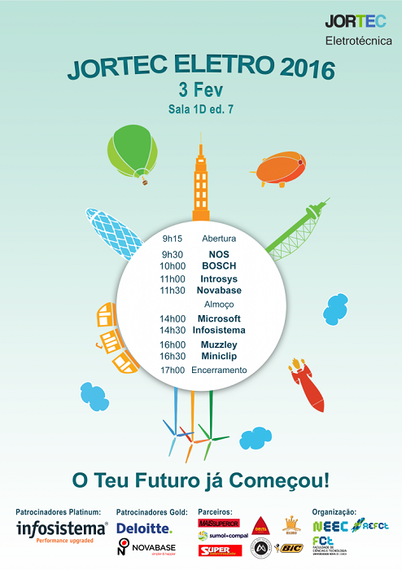

Neste ano na JORTEC de Engenharia Eletrotécnica e de Computadores vamos contamos com a presença de várias empresas que nos deram a falar um pouco das oportunidades que há para um engenheiro eletrotécnico dentro das mesmas.
Podemos também assistir a diversos workshops sobre vários temas que nos ajudarão a ficar mais preparado para o mercado de trabalho.
| Aberto ao Publíco | Permalink |